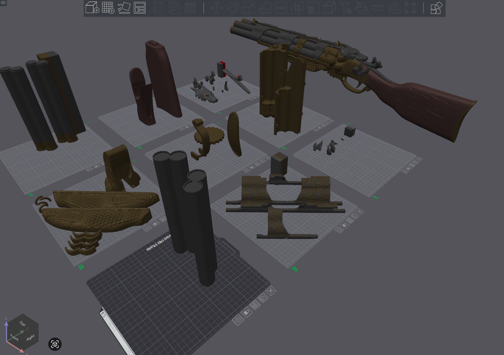
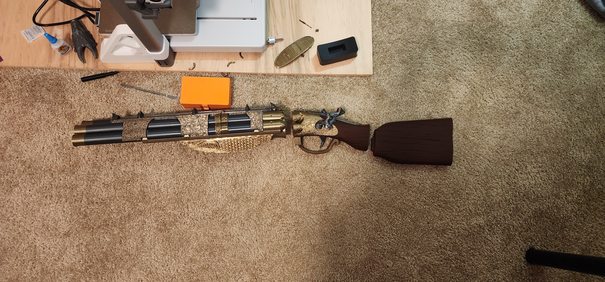
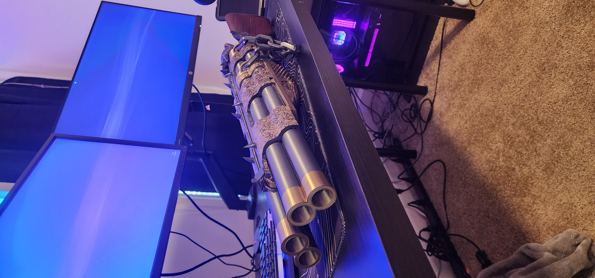
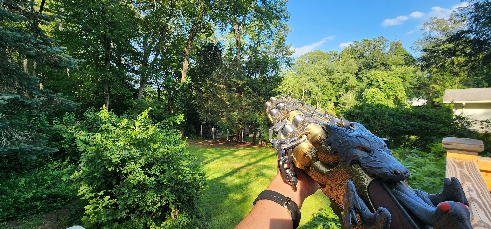

Blundergat from "Call of Duty: Black Ops II Zombies"
September 2024

As of writing this (July 2025), the Blundergat (🤓 it's actually "The Sweeper" because it is the Pack-a-Punched variant 🤓) is my favorite project I have worked on.
A big time sink from this project that I have not experienced with other projects, is that I manually painted all of it in Bambu Studio. I made this in my college apartment and did not have the tools necessary to paint. I saw it as a challenge to make this look decent while being fully 3D printed. The pieces that cover the barrel took me about four hours to perfectly paint in the slicer.
I plan on making this again. I want to attempt painting it, as well as correcting mistakes I made the first time around (the stock does not fit well which is a problem with the model, layer line issues, the chain that I picked out is REALLY big, etc.)
Overall, this is a cool enough prop that it is mounted on the wall next to my bed.
This model was found on Sliceables Patreon
Extra pictures from the design process




